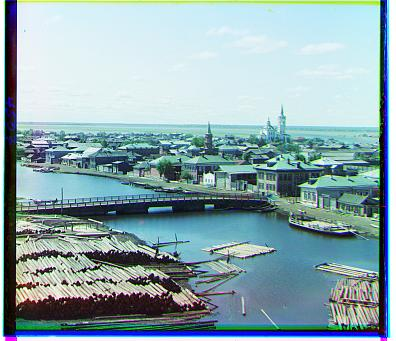

Bells and Whistles
I implemented automatic cropping / artifact removal enhance alignment quality:
- Removal of white border before alignment (preprocess): I go row by row, removing rows from the top and bottom whose mean pixel intensity is above a certain threshold (0.95). The same is done for columns.
- Artifact removal after alignment (postprocess):
To remove artifacts / other solid borders, I defined the "goodeness" of pixel as
max((r-g)^2 + (g-b)^2 + (b-r)^2, 0 if 0.2 < (r+g+b)/3 < 0.8 else 1). I then take the mean goodness per row/column, and remove rows/columns from the edges until the mean goodness exceeds a threshold (0.5).
Before and After
emir.jpg (before)
emir.jpg (after)

church.jpg (before)
church.jpg (after)

tobolsk.jpg (before)
tobolsk.jpg (after)